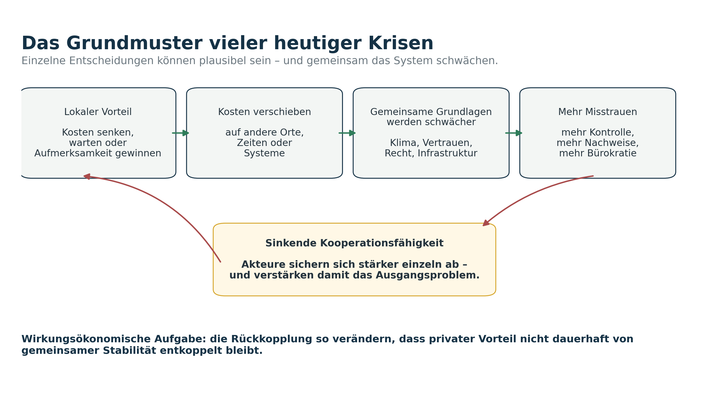
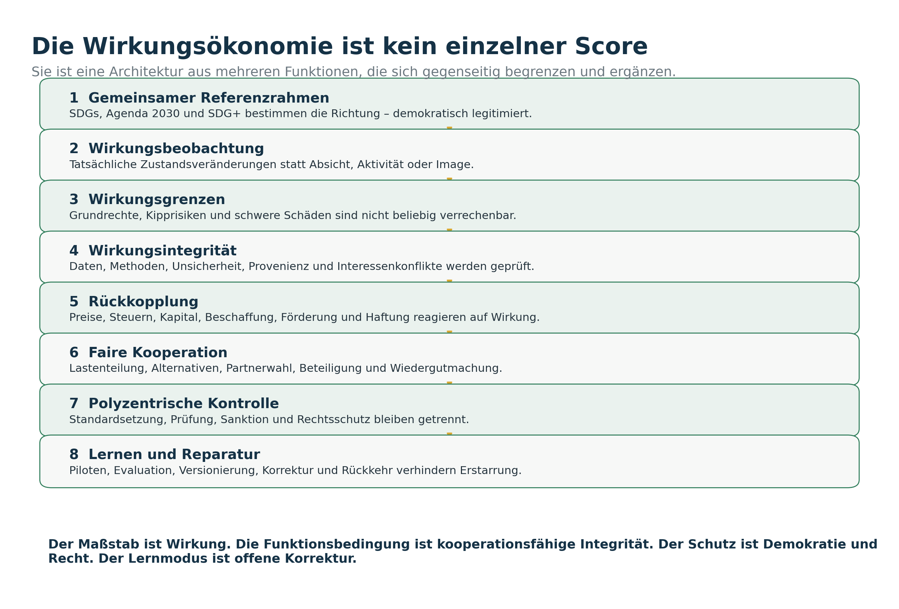
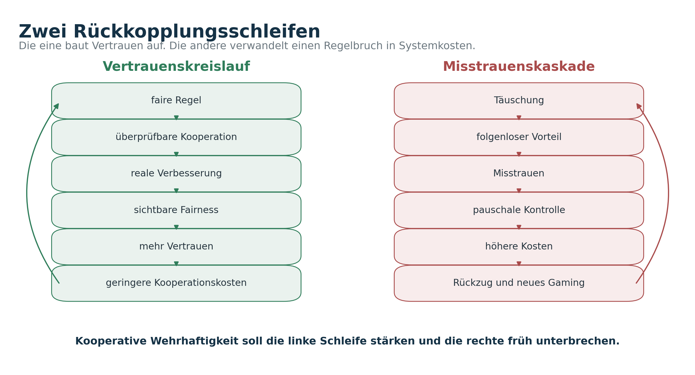

Abstract
Die multiplen Krisen der Gegenwart lassen sich nicht nur als Folge unvollständiger Preise oder externalisierter Kosten verstehen. Sie folgen einer ganzen Familie sozialer Dilemmata: Individuell oder organisatorisch plausible Entscheidungen können gemeinsam Klima, Biodiversität, öffentliche Güter, soziale Sicherheit, Vertrauen und demokratische Handlungsfähigkeit schwächen. Zu diesen Mustern gehören das Gefangenendilemma, Trittbrettfahren, die Tragik der Allmende, Koordinations- und Assurance-Probleme, Principal-Agent-Konflikte, Moral Hazard, regulatorische Vereinnahmung und psychologische Abwehr gegen Veränderung.
Die Wirkungsökonomie setzt an dieser gemeinsamen Struktur an. Sie macht nicht Kapital, Gewinn, Wachstum oder Aktivität zum letzten Maßstab, sondern die tatsächliche Zustandsveränderung. Bewertete Wirkung wird in Preise, Steuern, Kapitalzugang, Beschaffung, Förderung, Haftung und öffentliche Entscheidungen zurückgeführt. Dadurch verändert sich die Auszahlungsmatrix dezentraler Entscheidungen: Schädliche Wirkung soll ihren bisherigen Wettbewerbsvorteil verlieren; positive Netto-Wirkung für Mensch, Planet und Demokratie soll wirtschaftlich und institutionell tragfähig werden.
Doch gerade dadurch entsteht ein Dilemma zweiter Ordnung. Sobald Wirkungswerte Vorteile verteilen, lohnt es sich, nicht die Wirklichkeit, sondern den Score zu optimieren. Wirkungssimulation, selektive Daten, Audit Shopping, Greenwashing, technokratische Macht und neue Bürokratie können die Ordnung von innen aushöhlen. Dieser Beitrag entwickelt deshalb die Wirkungsökonomie als kooperative, rechtsstaatlich begrenzte und lernfähige Architektur: mit Wirkungsgrenzen, Wirkungsintegrität, risikobasierter Verifikation, polyzentrischer Kontrolle, fairen Übergängen, Wiedergutmachung und empirischer Bewährung.
Für SDG+ folgt daraus eine Präzisierung statt einer bloßen Zielvermehrung. Die neun bestehenden Felder bleiben erhalten, werden aber durch drei nicht kompensierbare Querschnittsgates ergänzt: Wirkungsintegrität, Kooperationsfähigkeit und institutionelle Vertrauenswürdigkeit. Die Wirkungsökonomie kann damit als besonders vollständiger Kandidat für eine Steuerungsordnung des 21. Jahrhunderts begründet werden. Ob sie tatsächlich besser ist, muss sie jedoch in Piloten, Verteilungsanalysen, Rechtsprüfungen und realen Zustandsverbesserungen beweisen.
Schlüsselbegriffe: Wirkungsökonomie · soziale Dilemmata · Kooperation · Vertrauen · Wirkungsintegrität · Reverse Merit Order · SDG+ · kooperative Wehrhaftigkeit · institutionelles Lernen
Der Beitrag in einem Satz Die Wirkungsökonomie funktioniert nicht, weil sie bessere Menschen voraussetzt, sondern wenn sie bessere Rückkopplungen, faire Regeln, überprüfbare Wirkung und korrigierbare Institutionen schafft.
Was dieser Beitrag behauptet – und was nicht
Der Beitrag entwickelt eine theoretisch und institutionell begründete Lesart der Wirkungsökonomie. Er zeigt, warum ihr Gegenstand weiter reicht als ehrliche Preise und warum Kooperation, Psychologie, Integrität, Macht und Reparatur zu ihren Funktionsbedingungen gehören. Er behauptet nicht, dass ein gesamtwirtschaftliches WÖk-System bereits empirisch bewiesen, rechtlich abschließend geprüft oder technisch vollständig implementiert wäre. Gerade eine Wirkungsordnung muss ihre eigenen Behauptungen denselben Maßstäben unterwerfen, die sie von anderen verlangt: Transparenz, Prüfbarkeit, Unsicherheit und Korrekturfähigkeit.
Grundlage ist die umfassende WÖk-Masterstudie „Die Funktionsbedingungen der Wirkungsökonomie“ sowie der führende Begriffsleitfaden. Wirkung wird darin als tatsächliche Zustandsveränderung verstanden; positive Netto-Wirkung für Mensch, Planet und Demokratie ist die Zielgröße. 15
1. Der Fisch, der uns etwas über Wirtschaft beibringt
Auf einem Korallenriff geschieht etwas, das auf den ersten Blick ziemlich unvernünftig aussieht. Ein großer Fisch schwimmt zu einer festen Stelle, bleibt dort stehen und öffnet manchmal sogar das Maul. Dann kommt ein viel kleinerer Putzerlippfisch, schwimmt über seine Haut und zwischen seine Zähne und beginnt zu fressen.
Der kleine Fisch entfernt Parasiten. Der große Fisch wird sie los. Beide haben etwas davon. Das ist der Deal.
Allerdings hat der kleine Fisch eine Versuchung. Die Parasiten sind nützlich, aber der schützende Hautschleim des Kundenfisches schmeckt ihm oft besser. Frisst er davon, ruckt der Kunde, bricht die Reinigung ab, verfolgt den Putzer oder wechselt zu einer anderen Station. Andere Fische können beobachten, wie zuverlässig der Putzer arbeitet. Seine Leistung von heute beeinflusst also seine Geschäfte von morgen. Feldstudien zeigen, dass Sanktion, Partnerwechsel und beobachtbare Reputation die Kooperation in diesem biologischen Markt stabilisieren können. 13
Das ist natürlich keine fertige Staatsphilosophie. Menschen sind keine Putzerfische, Unternehmen keine Korallenriffe und eine Demokratie ist kein Aquarium. Aber der Mechanismus ist hilfreich: Kooperation funktioniert nicht nur, weil alle Beteiligten nett sind. Sie funktioniert besser, wenn Leistung sichtbar ist, Partner wechseln können, Verhalten Folgen für künftige Beziehungen hat und Regelbruch nicht dauerhaft profitabel bleibt.
Ein großer Teil unserer Wirtschaft beruht genau darauf. Niemand kontrolliert jeden Arbeitsschritt, jede Rechnung, jede Lieferkette und jede Aussage lückenlos. Wir verlassen uns darauf, dass Lebensmittel nicht vergiftet, Bilanzen nicht erfunden, Bremsen richtig montiert und öffentliche Daten nicht manipuliert sind. Vertrauen spart Zeit, Verträge, Kontrolle und Geld. Es ist keine romantische Zugabe. Es ist Infrastruktur.
Die eigentliche Frage lautet deshalb nicht: Sind Menschen grundsätzlich kooperativ oder egoistisch? Die brauchbare Frage lautet: Unter welchen Bedingungen bleibt Kooperation tragfähig – und was geschieht, wenn einzelne Akteure das System ausnutzen?
Merksatz Das System muss nicht an die Moral des Putzerfisches appellieren. Es muss die Folgen seines Verhaltens verändern.
2. Wir wissen längst, was schiefläuft. Warum handeln wir trotzdem zu langsam?
An Wissen fehlt es nicht. Staaten haben Klimaziele. Unternehmen erstellen Nachhaltigkeitsberichte. Kommunen planen Hitzevorsorge. Wissenschaftler:innen modellieren Risiken. Gerichte, Behörden, Zivilgesellschaft und Medien beobachten, warnen und korrigieren. Trotzdem bewegt sich das Gesamtsystem zu langsam.
Der UN-SDG-Bericht 2026 bewertet 139 Ziele mit ausreichenden Trenddaten. Nur 15 Prozent sind auf Kurs, weitere 21 Prozent zeigen mäßigen Fortschritt. Fast die Hälfte kommt nur geringfügig oder gar nicht voran; 15 Prozent liegen unter ihrem Ausgangsniveau von 2015. 1 Die Weltorganisation für Meteorologie bestätigt zugleich, dass 2015 bis 2025 die elf heißesten Jahre der Messgeschichte waren und 2025 rund 1,43 Grad Celsius über dem vorindustriellen Mittel lag. 2
Auch die demokratische und institutionelle Lage gehört zu diesem Bild. Der V-Dem-Bericht 2026 zählt 44 autokratisierende Staaten; 41 Prozent der Weltbevölkerung leben in ihnen. 3 In Deutschland gaben 2025 nur 35 Prozent der Befragten ein hohes oder moderat hohes Vertrauen in die Bundesregierung an. 4 Vertrauen ist dabei kein Sympathiewert. Es beeinflusst, ob Menschen Informationen akzeptieren, Lasten als fair erleben und Institutionen zutrauen, Fehler zu korrigieren.
| Beobachtung 2026 | Befund | Wirkungsökonomische Lesart |
|---|---|---|
| SDGs | 15 % auf Kurs, 21 % mit mäßigem Fortschritt | Ziele allein sind noch keine Rückkopplungsordnung. |
| Klima | 2015–2025 heißeste elf Jahre; 2025 etwa +1,43 °C | Zeitverzögerte Schäden verlieren gegen kurzfristige Vorteile. |
| Demokratie | 44 autokratisierende Länder; 41 % der Weltbevölkerung | Kollektive Problemlösung verliert institutionelle Grundlagen. |
| Vertrauen in Deutschland | 35 % hohes oder moderat hohes Vertrauen in die Bundesregierung | Fairness, Berechenbarkeit und Korrekturfähigkeit werden zum Engpass. |
Diese Zahlen beweisen nicht, dass keine Fortschritte stattfinden. Sie zeigen etwas anderes: Positive Einzelentwicklungen überholen die Geschwindigkeit der gekoppelten Risiken nicht. Wir zählen Maßnahmen, Investitionen, Gesetze und Berichte – aber entscheidend ist, ob sich der Zustand des Gesamtsystems tatsächlich verbessert.
Eine Dürre ist nicht nur ein Klimathema. Sie betrifft Landwirtschaft, Lebensmittelpreise, Binnenschifffahrt, Kühlwasser, Industrie, Gesundheit, Versicherungen, kommunale Haushalte und politische Konflikte. Steigende Lebenshaltungskosten sind nicht nur ein Sozialthema. Sie verändern Akzeptanz, Vertrauen und Wahlentscheidungen. Desinformation ist nicht nur ein Medienthema. Sie beschädigt die gemeinsame Tatsachengrundlage, auf der überhaupt über Lösungen verhandelt werden kann.
Das gemeinsame Muster lautet: Viele Akteure nutzen gemeinsame Systemleistungen – stabiles Klima, verlässliche Infrastruktur, öffentliche Wahrheit, Rechtsstaatlichkeit und Vertrauen. Gleichzeitig kann jeder Einzelne kurzfristig davon profitieren, Kosten zu verschieben, Investitionen aufzuschieben, Daten zu schönen oder auf den Beitrag anderer zu warten. Nicht jede Entscheidung ist böse. Viele sind innerhalb des eigenen Kontos sogar vernünftig. Der Schaden entsteht zwischen den Konten.

Lokal rational ist nicht automatisch systemisch wirksam. Ein Unternehmen kann Kosten senken, eine Kommune ihren Haushalt schützen, ein Haushalt den billigsten Preis wählen und eine Plattform Verweildauer maximieren. Jede Entscheidung kann im kleinen Ausschnitt plausibel sein. Das Gesamtergebnis kann dennoch Klima, Vertrauen, Gesundheit oder Demokratie schwächen.
Die sieben Lücken der heutigen Ordnung
| Lücke | Was auseinanderfällt | Typische Folge |
|---|---|---|
| Wirkungslücke | Aktivität und reale Zustandsveränderung | Programme zählen Maßnahmen statt Ergebnisse. |
| Preis- und Externalisierungslücke | privater Preis und gesellschaftliche Wirkung | Schädliche Angebote erscheinen billig. |
| Zeitlücke | heutiger Vorteil und künftiger Schaden | Vorgriffswohlstand und Aufschub. |
| Kooperationslücke | individuelle Sicherheit und kollektive Lösung | Abwarten, Trittbrettfahren, Misstrauen. |
| Integritätslücke | behauptete und reale Wirkung | Greenwashing, KPI-Gaming, Wirkungssimulation. |
| Machtlücke | Regelsetzung und demokratische Kontrolle | Lobbyismus, Capture, Monopolisierung von Daten. |
| Psychologische Lücke | formaler Anreiz und menschliche Reaktion | Reaktanz, Identitätsabwehr, Motivationsverlust. |
Die bisherige Wirkungsdebatte konzentriert sich häufig auf die zweite Lücke: Preise sind unvollständig und Kosten werden externalisiert. Das ist richtig, aber nicht vollständig. Wer nur an der Preislücke arbeitet, kann an Koordination, Vertrauen, Macht, Psychologie oder Datenintegrität scheitern. Die Wirkungsökonomie muss deshalb das Zusammenspiel aller sieben Lücken bearbeiten.
3. Es ist nicht nur die Tragik der Allmende
Die Tragik der Allmende ist ein starkes Bild. Viele Menschen nutzen eine gemeinsame, begrenzte Ressource. Jede einzelne Person hat einen Vorteil, noch etwas mehr zu entnehmen oder etwas mehr zu belasten. Wenn alle so handeln, wird die gemeinsame Grundlage zerstört. Bei Atmosphäre, Grundwasser, Fischbeständen oder Böden ist dieses Muster leicht zu erkennen.
Aber nicht jedes gesellschaftliche Problem ist eine Allmende. Und nicht jedes Allmendeproblem lässt sich mit einem Preis lösen. Es hilft, die verschiedenen Spiele auseinanderzuhalten.
| Problemtyp | Was schiefläuft | Passendes Instrument |
|---|---|---|
| Gefangenendilemma | Kooperation wäre gemeinsam besser, aber jede Seite fürchtet, von der anderen ausgenutzt zu werden. | Auszahlungen verändern, Wiederholung, Verlässlichkeit und glaubwürdige Reaktion. |
| Öffentliches Gut / Trittbrettfahren | Alle profitieren, auch wer nicht beiträgt. | Gemeinsame Finanzierung, faire Beiträge, Anerkennung von Systempflege. |
| Tragik der Allmende | Ein begrenzter gemeinsamer Bestand wird übernutzt oder eine Senke überlastet. | Nutzungsregeln, Grenzen, Monitoring, abgestufte Sanktionen, lokale Mitgestaltung. |
| Assurance Game / Hirschjagd | Alle würden bei gemeinsamer Umstellung gewinnen, aber niemand will allein beginnen. | Garantien, gemeinsame Pfade, Standards, Infrastruktur und Übergangssicherheit. |
| Volunteer’s Dilemma | Eine Person oder Institution muss anfangen; jede hofft, dass es jemand anderes tut. | klare Zuständigkeit, Vorleistungsausgleich, Rotations- und Bereitschaftsregeln. |
| Principal-Agent / Moral Hazard | Wer entscheidet oder berichtet, weiß mehr als diejenigen, die das Risiko tragen. | Transparenz, Haftung, unabhängige Prüfung, Interessenoffenlegung. |
| Anticommons | Zu viele Rechte, Vetos, Schnittstellen oder Nachweise blockieren eine sinnvolle Nutzung. | Bündelung, klare Zuständigkeiten, Once-only-Daten, zeitliche Entscheidungen. |
| Capture und Rent Seeking | Akteure investieren in die Regeln statt in bessere Wirkung. | Gewaltenteilung, Offenlegung, Rotation, plural besetzte Institutionen, Rechtsschutz. |
Das Gefangenendilemma: Warum gute Absichten nicht reichen
Stellen wir uns zwei Unternehmen vor, die ihre Lieferketten verbessern könnten. Wenn beide investieren, sinken Risiken, Standards steigen und der Markt gewinnt Vertrauen. Wenn nur eines investiert, hat es zunächst höhere Kosten, während das andere billiger anbietet. Beide wissen das. Also wartet jedes darauf, dass das andere beginnt.
Das ist kein Beweis für Bosheit. Es ist ein Anreizproblem. In einem einmaligen Gefangenendilemma kann Abweichen individuell attraktiv sein, obwohl Kooperation das bessere Gesamtergebnis erzeugt. In wiederholten Beziehungen ändert sich die Lage: Künftige Geschäfte, Reputation und Reaktionen bekommen Gewicht. Die Forschung zu „Tit for Tat“ und wiederholten Spielen zeigt, dass Kooperation unter bestimmten Bedingungen stabil werden kann – vor allem, wenn Interaktionen wiederholt, Verhalten erkennbar und Gegenreaktionen verhältnismäßig sind. 6 7
Ein Staat kann daraus allerdings nicht einfach die Regel „Wie du mir, so ich dir“ machen. Fehler, Missverständnisse und Messrauschen würden sonst Vergeltungsspiralen erzeugen. Eine tragfähige Ordnung braucht deshalb Verzeihlichkeit und Reparatur: klar reagieren, aber nach Wiedergutmachung die Rückkehr ermöglichen.
Öffentliche Güter: Warum alle profitieren und trotzdem zu wenig entsteht
Saubere Luft, Grundlagenforschung, Katastrophenschutz, eine belastbare Demokratie oder eine verlässliche Informationsordnung sind keine normalen Waren. Wer von ihnen profitiert, kann oft nicht vollständig ausgeschlossen werden. Dadurch entsteht der Anreiz, den eigenen Beitrag klein zu halten und auf andere zu hoffen.
Hier hilft ein Preis auf Nutzung allein nicht unbedingt. Manchmal braucht es gemeinsame Finanzierung, Mindestbeiträge oder institutionell gesicherte Pflege. Auch Sanktionen sind selbst ein öffentliches Gut: Wer einen Trittbrettfahrer aufhält, trägt Kosten, von denen andere profitieren. Experimente zeigen, dass Kooperation steigen kann, wenn Regelbruch sanktionierbar ist – zugleich muss verhindert werden, dass Sanktion zur Machtressource oder zum Selbstzweck wird. 9
Assurance: Viele wollen mitmachen – aber nicht allein
Ein großer Teil der Transformation ist kein klassisches Gefangenendilemma, sondern ein Sicherheitsproblem. Unternehmen würden auf klimaneutrale Produktion umstellen, wenn Infrastruktur, Nachfrage, Stromnetze, Standards und Finanzierung mitziehen. Haushalte würden investieren, wenn Preise, Technik und Förderung verlässlich wären. Kommunen würden vorangehen, wenn sie nicht befürchten müssten, die Kosten allein zu tragen.
Die passende Antwort ist dann nicht mehr Strafe, sondern Koordinationssicherheit: gemeinsame Zeitpläne, Garantien, Standards, öffentliche Infrastruktur und faire Übergänge. Wer jedes Problem als moralisches Versagen behandelt, wählt das falsche Werkzeug.
4. Preise lügen nicht absichtlich. Sie sind nur unvollständig.
Ein Preis ist eine erstaunlich kompakte Information. In einer Zahl stecken Material, Lohn, Energie, Transport, Risiko, Marge, Knappheit und Steuer. Aber nur das, was im jeweiligen Konto auftaucht. Klimaschäden, verlorene Gesundheit, zerstörte Böden, prekäre Arbeit oder demokratische Destabilisierung erscheinen nicht automatisch.
Externalisierung bedeutet: Die Wirkung entsteht, aber die Rechnung landet bei jemand anderem – an einem anderen Ort, in einem anderen System oder zu einem späteren Zeitpunkt. Ein unvollständiger Preis ist die Informationsseite dieses Problems. Die Tragik der Allmende ist die Governance-Seite. Bei fossiler Energie kommen alle drei zusammen.
Öl, Kohle und Gas liefern einen konkreten privaten Nutzen. Die Atmosphäre nimmt Treibhausgase auf, ohne an der Kasse eine Rechnung zu stellen. Ihre Aufnahmefähigkeit ist aber begrenzt. Der Vorteil entsteht heute; ein erheblicher Teil der Schäden verteilt sich über Länder, Jahrzehnte und Generationen. Die Atmosphäre wird als Senkenallmende genutzt.
Das klingt technisch. Gemeint ist etwas Einfaches: Wir behandeln einen empfindlichen Teil unseres Lebenssystems wie einen kostenlosen Mülleimer. Der Preis an der Tankstelle oder auf der Gasrechnung zeigt den späteren Aufwand für Hitzevorsorge, Flutschäden, Ernteverluste, Gesundheit, Versicherungen und Infrastruktur nur unvollständig.
Die Wirkungsökonomie will diese Rückkopplung verbessern. Messbare und zurechenbare Wirkungen sollen in Preise, Steuern, Haftung oder Kapitalbedingungen zurückkehren. Das ist die klassische Idee der Internalisierung – erweitert um mehrere Wirkungsdimensionen und systemische Rückkopplungen. 16
Aber: Ein vollständigerer Preis ist noch keine vollständige Ordnung. Manche Schäden dürfen nicht einfach bepreist werden. Kinderarbeit wird nicht legitim, wenn der Steuersatz hoch genug ist. Ein irreversibler Naturschaden wird nicht akzeptabel, weil jemand eine Gebühr zahlt. Die Zerstörung demokratischer Institutionen darf nicht mit einem guten Klimaprojekt verrechnet werden.
Preis, Grenze oder Kooperation? Messbare, reversible und zurechenbare Wirkungen können über Preise, Steuern oder Haftung rückgekoppelt werden. Schwere, irreversible oder grundrechtsrelevante Schäden brauchen Grenzen und Standards. Öffentliche Güter benötigen gemeinsame Finanzierung. Allmenden benötigen Nutzungsregeln und Monitoring. Koordinationsprobleme benötigen Garantien und gemeinsame Pfade.
Das Nichtkompensationsprinzip – in der WÖk als Reverse Merit Order operationalisiert – ist deshalb keine mathematische Marotte. Es ist die Sicherung gegen Ablasshandel. Das schwächste zentrale Wirkungsfeld begrenzt die Gesamtbewertung. Gute Werte in einem Bereich dürfen schwere Schäden in einem anderen nicht unsichtbar machen.
5. Menschen sind weder Engel noch Taschenrechner
Viele ökonomische Modelle tun so, als würden Menschen alle Informationen kennen, Wahrscheinlichkeiten sauber vergleichen und dann jene Option wählen, die ihren Nutzen maximiert. Das ist praktisch. Aber es beschreibt den Alltag nur teilweise.
Menschen sind begrenzt aufmerksam. Sie reagieren auf Verluste stärker als auf gleich große Gewinne. Sie bevorzugen oft den bekannten Zustand, gewichten unmittelbare Kosten stärker als spätere Vorteile und verteidigen Entscheidungen, die mit der eigenen Identität verbunden sind. Die Verhaltensökonomie hat diese Muster unter anderem als Verlustaversion und Status-quo-Bias beschrieben. 12
Der Verlust ist heute. Der Nutzen kommt später.
Eine neue Heizung kostet jetzt. Der vermiedene Klimaschaden liegt in der Zukunft. Eine Lieferkette umzustellen erzeugt sofort Aufwand; die geringere Krisenanfälligkeit zeigt sich vielleicht erst Jahre später. Ein Unternehmen sieht das nächste Quartal, eine Regierung die nächste Wahl, ein Haushalt die nächste Rechnung. So entsteht Vorgriffswohlstand: Wir genießen heute einen Vorteil, indem wir Stabilität von morgen verbrauchen.
Eine Wirkungsordnung darf diesen Effekt nicht mit bloßen Appellen beantworten. Sie muss langfristige Wirkung in heutige Entscheidungen zurückholen – durch verlässliche Pfade, Rückstellungen, Finanzierung, Garantien und sichtbare Zukunftskosten.
Kontrolle kann das Gegenteil bewirken
Mehr Kontrolle wirkt nicht immer wie mehr Verlässlichkeit. In Experimenten senkten viele Personen ihre freiwillige Leistung, wenn Kontrolle als Misstrauenssignal und Einschränkung der Autonomie erlebt wurde. 10 Ein bekanntes Feldexperiment zeigte sogar, dass eine Geldbuße für verspätetes Abholen von Kindern die Verspätungen erhöhte: Aus einer sozialen Verpflichtung wurde eine bezahlbare Zusatzleistung. 11
Das ist für die Wirkungsökonomie zentral. Ein Bonus kann positive Wirkung fördern – oder intrinsische Motivation verdrängen. Eine Sanktion kann abschrecken – oder zur Lizenzgebühr für Schädigung werden. Die Frage lautet nicht nur: Wie hoch ist der Anreiz? Sondern: Welche Bedeutung gibt er dem Verhalten?
Fairness ist kein weicher Zusatz
Menschen tragen Belastungen eher mit, wenn sie Regeln als fair, Verfahren als nachvollziehbar und Beiträge anderer als glaubwürdig erleben. Viele kooperieren bedingt: Sie sind bereit beizutragen, solange sie erwarten, dass andere ebenfalls beitragen. Werden Trittbrettfahrer sichtbar belohnt, kippt Kooperation schnell in Rückzug.
Darum muss eine Wirkungsordnung nicht nur effizient, sondern verfahrensgerecht sein. Wer profitiert? Wer verursacht? Wer kann überhaupt verändern? Wer hatte Entscheidungsmacht? Eine alleinerziehende Mieterin ohne alternative Heizung darf nicht so behandelt werden wie ein Konzern, der über Jahrzehnte Infrastruktur und politische Entscheidungen mitgestaltet hat.
Identität schlägt Information
Autos, Ernährung, Energie, Beruf oder Region sind nicht nur Sachfragen. Sie können Zugehörigkeit und Status ausdrücken. Wird eine Transformationsmaßnahme als Angriff auf die eigene Gruppe erlebt, wächst Reaktanz: Menschen verteidigen dann nicht unbedingt die Technik, sondern sich selbst.
Wirkungslenkung braucht deshalb eine Sprache der Handlungsfähigkeit. Nicht: „Du bist das Problem.“ Sondern: „Hier ist ein fairer, machbarer Pfad, bei dem dein Wissen und deine Lage zählen.“ Beteiligung ist dann keine Dekoration, sondern ein psychologischer und demokratischer Wirkungsfaktor.
Psychologische Designregeln Verluste abfedern · Übergänge verlässlich machen · Wahlmöglichkeiten erhalten · Verfahren begründen · Beiträge anderer sichtbar machen · Identitätskränkungen vermeiden · Selbstwirksamkeit ermöglichen · intrinsische Motivation nicht mit pauschaler Kontrolle verdrängen.
6. Kooperation ist nicht automatisch gut
Es wäre verführerisch, Kooperation zur moralischen Grundlage der Wirkungsökonomie zu erklären. Aber Kooperation an sich ist neutral. Ein Kartell kooperiert. Eine Mafia kooperiert. Ein Korruptionsnetzwerk kann intern höchst verlässlich sein. Autoritäre Gruppen können Solidarität nach innen und Ausbeutung nach außen verbinden.
Die Wirkungsökonomie fragt deshalb nicht: Arbeiten Akteure zusammen? Sie fragt: Welche Netto-Wirkung erzeugt die Zusammenarbeit, wer trägt die Kosten und bleiben Grundrechte, Wettbewerb, Transparenz und Korrektur erhalten?
Systemische Kooperation ist eine wichtige Wirkungsform, nicht der oberste Maßstab. Der Maßstab bleibt positive Netto-Wirkung für Mensch, Planet und Demokratie. Kooperation ist dort stark, wo sie gemeinsames Wissen, Lastenteilung und Innovation ermöglicht. Sie wird destruktiv, wenn sie Macht abschottet, Dritte ausbeutet oder Regeln vereinnahmt.
Wettbewerb und Kooperation gehören zusammen
Auch Wettbewerb bleibt. Er ist ein Suchverfahren: Unterschiedliche Akteure probieren unterschiedliche Lösungen aus. Das Problem ist nicht, dass Unternehmen um Kund:innen konkurrieren. Das Problem ist, wenn der Wettbewerb jene belohnt, die Schäden am erfolgreichsten auslagern.
Die WÖk zielt deshalb auf eine kooperative Wettbewerbsordnung. Gemeinsame Grenzen, Datenstandards und öffentliche Ziele bilden das Spielfeld. Innerhalb dieses Rahmens konkurrieren Unternehmen, Kommunen und Technologien um die wirksamsten Lösungen. Kooperation sorgt für Infrastruktur und gemeinsame Regeln; Wettbewerb erhält Vielfalt, Lernfähigkeit und Innovation.
7. Was die Wirkungsökonomie im Kern ist
Die Wirkungsökonomie ist weder eine Moralordnung noch nur eine Steuerreform. Sie ist eine Rückkopplungsarchitektur.
Der Ausgangspunkt ist Wirkung als tatsächliche Zustandsveränderung. Ein Produkt ist nicht positiv, weil es grün aussieht. Eine Maßnahme ist nicht wirksam, weil sie beschlossen wurde. Ein Bericht ist nicht Wirkung. Entscheidend ist, was sich bei Menschen, Ökosystemen, Institutionen und zukünftigen Handlungsmöglichkeiten verändert.
Die Bewertung erfolgt nicht aus privater Moral, sondern an einem öffentlich nachvollziehbaren Referenzrahmen: den SDGs, der Agenda 2030 und SDG+. Die Zielgröße ist positive Netto-Wirkung für Mensch, Planet und Demokratie – unter Wirkungsgrenzen und ohne beliebige Kompensation. 15
Die Auszahlungsmatrix verändern
In der heutigen Ordnung können negative Wirkungen wirtschaftlich attraktiv sein. Wer Emissionen, Risiken oder soziale Kosten auslagert, senkt seinen Preis. Wer Daten nicht erhebt, spart Aufwand. Wer auf andere wartet, vermeidet Vorleistung. Die Auszahlungsmatrix belohnt damit teilweise genau jenes Verhalten, das das Gesamtsystem schwächt.
Die Wirkungsökonomie will nicht das Eigeninteresse abschaffen. Sie will verhindern, dass Eigeninteresse dauerhaft von gemeinsamer Stabilität entkoppelt bleibt. Wirkung wird deshalb in Preise, Steuern, Kapitalzugang, Beschaffung, Förderung, Haftung, Einkommen, Rente und öffentliche Entscheidungen zurückgeführt.
Ein Unternehmen soll nicht aus Nächstenliebe eine sichere Lieferkette wählen müssen. Es soll einen realen wirtschaftlichen Vorteil haben, wenn seine Wirkung besser und glaubwürdiger ist. Umgekehrt darf ein Anbieter keinen dauerhaften Vorteil daraus ziehen, dass andere seine Folgekosten tragen.

Wenige Ordnungsparameter statt zentraler Detailplanung
Die Wirkungsökonomie soll nicht festlegen, welches Unternehmen welches Produkt mit welcher Maschine herstellt. Sie verändert wenige Ordnungsparameter: relevante Wirkung wird sichtbar; Vorteile und Folgen werden wieder angenähert; rote Linien bleiben nicht kompensierbar; Daten werden prüfbar; Missbrauch verliert seinen Vorteil; Betroffene können mitgestalten; Lösungen bleiben dezentral; Regeln lernen aus realen Folgen.
Das ist der Unterschied zwischen Plan und Spielfeld. Der Plan schreibt den Spielzug vor. Das Spielfeld definiert Tore, Fouls, Linien und Schiedsverfahren. Die Akteure entscheiden weiterhin selbst, wie sie spielen.
Die WÖk in vier Sätzen Der Maßstab ist Wirkung. Die Funktionsbedingung ist kooperationsfähige Integrität. Der Schutz ist Demokratie und Recht. Der Lernmodus ist offene Korrektur.
8. Vertrauen ist eine gemeinsame Infrastruktur
Vertrauen wird häufig wie eine Stimmung behandelt: Menschen vertrauen oder sie vertrauen eben nicht. Für komplexe Systeme ist das zu oberflächlich. Vertrauen bedeutet, dass Akteure mit hinreichender Wahrscheinlichkeit berechenbares Verhalten, faire Verfahren und Korrekturmöglichkeiten erwarten können.
Es ist dabei nicht entscheidend, ob alle einander mögen. Ein Rechtsstaat kann Vertrauen ermöglichen, gerade weil persönliche Sympathie nicht nötig ist. Verträge, unabhängige Gerichte, transparente Daten und verlässliche Verfahren machen Kooperation zwischen Fremden möglich.
Die Vertrauensallmende
Vertrauen ist keine klassische Allmende wie ein Fischbestand. Es wird nicht einfach aufgebraucht, wenn jemand es nutzt. Im Gegenteil: Bestätigte Kooperation kann Vertrauen vermehren. Aber einzelne Akteure können den gemeinsamen Bestand an Verlässlichkeit kurzfristig ausbeuten.
Ein Unternehmen fälscht Daten und erhält einen Bonus. Eine Plattform verspricht Neutralität und manipuliert Reichweite. Eine Behörde verschleiert einen Fehler. Der unmittelbare Vorteil bleibt beim Akteur. Die Folge verteilt sich auf alle: mehr Nachweise, mehr Kontrollen, höhere Kosten, langsamere Verfahren und geringere Bereitschaft zur Kooperation.
Der Betrüger macht den Gewinn. Die Ehrlichen bezahlen anschließend die Kontrolle. Betrug externalisiert nicht nur Geld. Er externalisiert Misstrauen.
Genau deshalb ist Vertrauen eine regenerative soziale Allmende: Viele profitieren von einem gemeinsamen Bestand an Berechenbarkeit. Faire Kooperation kann ihn aufbauen. Folgenloser Regelbruch kann ihn abbauen. Pauschale Überwachung kann ihn ebenfalls beschädigen.
Eine einfache Vertrauensformel
Vertrauen morgen = Vertrauen heute + bestätigte faire Kooperation − Täuschung − Straflosigkeit − unverhältnismäßige Kontrolle Die Formel ist keine exakte Messgleichung. Sie macht eine Systemlogik sichtbar: Sowohl Betrug als auch Generalverdacht können Kooperationsfähigkeit zerstören.
Die WÖk braucht deshalb einen Mittelweg: Vertrauen als Ausgangspunkt, Verifikation nach Risiko, Reaktion nach Evidenz und Rückkehr nach Wiedergutmachung.

9. Das zweite Dilemma: Wenn Wirkung wertvoll wird, wird Wirkungssimulation profitabel
Hier liegt die gefährlichste Stelle jeder Wirkungsordnung. Sobald ein guter Wirkungswert Steuern senkt, Kredite verbilligt, Vergaben gewinnt oder Reputation schafft, entsteht ein neuer Anreiz: Man kann die Wirkung verbessern – oder ihre Darstellung.
Ein Unternehmen kann die Systemgrenze verschieben, eine günstige Baseline wählen, problematische Lieferketten auslassen, Zeitfenster verkürzen, Doppelzählungen nutzen oder einen kleinen grünen Produktteil zum Bild des gesamten Geschäfts machen. Prüfer können abhängig werden. Branchen können Benchmarks zu ihren Gunsten beeinflussen. Algorithmen können genau jene Daten produzieren, die der Score erwartet.
Das ist die Wirkungsvariante eines bekannten Messproblems: Wird eine Kennzahl zum Ziel, wächst der Druck, die Kennzahl statt der Wirklichkeit zu optimieren. Campbell beschrieb bereits, dass quantitative soziale Indikatoren unter Entscheidungsdruck korrumpiert werden und zugleich die Prozesse verzerren können, die sie beobachten sollen. 14
Die Schlussfolgerung lautet nicht, auf Messung zu verzichten. Ohne Messung bleiben Wirkung, Verteilung und Nebenfolgen unsichtbar. Die Schlussfolgerung lautet: Kein Score darf ohne Integritätsprüfung automatisch zu Geld, Marktzugang oder politischer Legitimation werden.
Wirkungsintegrität
Wirkungsintegrität bezeichnet die Verbindung zwischen behaupteter und realer Wirkung. Sie verlangt mindestens: klare Behauptungen, eindeutige Objektidentität, nachvollziehbare Datenherkunft, sichtbare Unsicherheit, plausible Systemgrenzen, unabhängige Prüfung, Korrekturhistorie und Schutz vor Interessenkonflikten.
Ein hoher Wirkungswert bei unklarer Datenqualität ist nicht einfach ein etwas unsicherer guter Wert. Er ist zunächst ein nicht freigegebener Wert. Deshalb gehört das Integritätsgate vor den FinalScore, vor den T-SROI-Multiplikator und vor die steuerliche oder reputative Nutzung.
10. Betrug verhindern, ohne Vertrauen zu zerstören
Vollständig verhindern lässt sich Betrug in keinem System. Die brauchbare Aufgabe lautet: Betrug unattraktiv, erkennbar, rückholbar und systemisch begrenzbar machen – ohne alle ehrlichen Akteure unter Generalverdacht zu stellen.
Zuerst unterscheiden
| Fall | Kennzeichen | Reaktion |
|---|---|---|
| Irrtum | Eine nachvollziehbare falsche Annahme oder fehlerhafte Berechnung. | Korrektur, Dokumentation, Lernen. |
| Datenlücke | Ein relevanter Wert fehlt oder ist nicht belastbar. | Konservativer Standardwert und Nachweispfad. |
| Überforderung | Ein Akteur kann die Anforderungen trotz guten Willens nicht angemessen erfüllen. | Vereinfachtes Verfahren, Beratung, Übergangsfrist. |
| Fahrlässigkeit | Sorgfaltspflichten wurden vermeidbar verletzt. | Rückforderung, Auflagen, vertiefte Prüfung. |
| Vorsätzlicher Betrug | Daten, Grenzen oder Nachweise werden bewusst manipuliert. | Rückforderung, Sanktion, Verlust von Vorteilen. |
| Wiederholter/organisierter Betrug | Täuschung ist Teil des Geschäfts- oder Machtmodells. | zeitweiliger oder dauerhafter Ausschluss, straf- und zivilrechtliche Folgen. |
Wer eine Datenlücke wie Betrug behandelt, zerstört Verhältnismäßigkeit. Wer vorsätzliche Täuschung wie einen einfachen Fehler behandelt, zerstört die Ordnung. Die Differenzierung ist daher kein Entgegenkommen, sondern Funktionsvoraussetzung.
Kooperative Wehrhaftigkeit
Kooperative Wehrhaftigkeit beginnt mit einem begrenzten Vertrauensvorschuss. Relevante Wirkungen bleiben überprüfbar. Die Prüftiefe steigt mit Wirkungshöhe, Unsicherheit, Anomalien, Vorgeschichte und Interessenkonflikten. Kleine risikoarme Akteure erhalten Standardwerte und vereinfachte Nachweise; hochriskante Aktivitäten brauchen tiefere Evidenz.
Die Kaskade lautet: Standardprozess bei niedrigem Risiko – automatische Plausibilitätsprüfung – Zufallsstichprobe – vertiefte Prüfung bei Auffälligkeit – Rückforderung unberechtigter Vorteile – proportionale Sanktion bei Vorsatz – Rückkehr nach Reparatur.
Safe Harbor und Clawback
Ein Safe Harbor schafft einen Anreiz zur ehrlichen Selbstkorrektur. Wer einen Fehler früh meldet, Daten berichtigt, Vorteile zurückzahlt und Schäden repariert, wird anders behandelt als jemand, der erst nach Aufdeckung reagiert. Ohne diese Regel kann Schweigen rationaler sein als Offenheit.
Clawback bedeutet: Ein unberechtigter Vorteil wird zurückgeholt. Das ist oft wirksamer als eine spektakuläre, aber seltene Höchststrafe. Ökonomisch wird Betrug unattraktiv, wenn die erwarteten Folgen den kurzfristigen Vorteil übersteigen:
Erwarteter Betrugsvorteil = kurzfristiger Gewinn − Entdeckungswahrscheinlichkeit × (Rückzahlung + Sanktion + Markt- und Reputationsverlust) Hohe, glaubwürdige Entdeckungswahrscheinlichkeit und sichere Rückforderung können wirksamer sein als extreme Strafdrohungen, die kaum angewendet werden.
Gewaltenteilung der Wirkungsordnung
Der Wirkungsrat darf Methoden und Benchmarks entwickeln, aber nicht zugleich jeden Einzelfall prüfen, sanktionieren und über Beschwerden entscheiden. Unternehmen erheben Daten. Unabhängige Stellen validieren. Behörden kontrollieren und vollziehen. Gerichte sichern Rechtsschutz. Wissenschaft und Öffentlichkeit prüfen Methoden und Folgen.
Diese Trennung verhindert, dass eine Institution Definition, Bewertung, Marktchance und Strafe zugleich kontrolliert. Polyzentrische Governance bedeutet nicht institutionelles Chaos, sondern mehrere begrenzte Zentren mit gemeinsamen Regeln und gegenseitiger Kontrolle. Ostroms Forschung zeigt, dass robuste Gemeingüterordnungen häufig genau solche mehrstufigen, an lokale Bedingungen angepassten Strukturen brauchen. 8 17
Exit, Voice und Repair
Kooperation braucht drei Türen. Exit: Akteure können einen unzuverlässigen Partner oder Prüfer wechseln. Voice: Betroffene können widersprechen, Beschwerden einreichen und Standards kommentieren. Repair: Fehler und Schäden können behoben werden, ohne dass jede Abweichung zum lebenslangen Ausschluss führt.
Fehlt Exit, werden Monopole ausbeutbar. Fehlt Voice, werden Daten blind für Erfahrungen. Fehlt Repair, wird die Ordnung starr und defensiv.
Kein Sozialkreditsystem
Wirkungsintegrität darf nicht in einen universellen Personenscore kippen. Bewertet werden konkrete Produkte, Aktivitäten, Organisationen, Projekte oder öffentliche Maßnahmen – zweckgebunden, datensparsam und mit Rechtsschutz. Private Lebensführung, politische Gesinnung oder soziale Beziehungen gehören nicht in ein staatliches Gesamtranking. Datenschutz und digitale Selbstbestimmung sind Wirkungsgrenzen, nicht nachrangige Komfortfragen.
11. Wie die Wirkungsökonomie selbst scheitern kann
Ein besserer Maßstab erzeugt noch kein gutes System. Die WÖk wäre besonders gefährlich, wenn sie ihren eigenen Anspruch für einen Beweis ihrer Richtigkeit hielte. Ihre Risiken müssen deshalb von Anfang an Teil der Architektur sein.
| Scheiterpfad | Frühes Warnsignal | Gegenmaßnahme |
|---|---|---|
| Der Score ersetzt die Wirkung | Kennzahlen steigen, reale Zustände nicht. | Outcome-Prüfung, mehrere Evidenzarten, Nichtkompensation. |
| Der Wirkungsrat wird vereinnahmt | Personal, Daten und Benchmarks stammen aus denselben Netzwerken. | Offenlegung, Rotation, Pluralität, Minderheitenvoten, externe Replikation. |
| Bürokratie verdrängt Nutzen | Nachweiskosten wachsen schneller als die Wirkung. | Once-only-Daten, Risikostufen, Standardwerte, Wegfall alter Doppelregeln. |
| Kontrolle verdrängt Motivation | Akteure erleben jede Anforderung als Misstrauen. | Verhältnismäßigkeit, Wahlräume, Safe Harbor, Beteiligung. |
| Technokratie verdrängt Demokratie | Modelle entscheiden, ohne dass Ziele und Grenzen politisch legitimiert sind. | demokratische Zielsetzung, öffentliche Methoden, Rechtsschutz. |
| Transformation verteilt Lasten unfair | Gebundene Haushalte und Regionen zahlen, obwohl Alternativen fehlen. | Übergangssicherheit, Fähigkeit zur Veränderung, soziale Rückverteilung. |
| Auditmarkt wird zum Geschäftsmodell | Prüfer verkaufen Beratung, Zertifikat und Abhängigkeit zugleich. | Trennung, Rotation, Haftung, öffentliche Aufsicht. |
| Digitalisierung wird Überwachung | Daten werden zweckentfremdet oder zu Personenscores verbunden. | Datensparsamkeit, Zweckbindung, Löschfristen, Zugriffskontrolle. |
| Scheingenauigkeit ersetzt Urteil | Unsichere Kausalität erscheint als exakter Wert. | Bandbreiten, Datenqualitätsklassen, offene Annahmen. |
Besonders wichtig ist die Verteilungsfrage. Ein Wirkungssteuer-Signal kann ökologisch korrekt und sozial ungerecht umgesetzt sein. Wer keine Alternative hat, kann nicht so behandelt werden wie jemand, der Infrastruktur, Kapital und Entscheidungsmacht kontrolliert. Wirkungstragung muss deshalb Verursachung, gezogenen Nutzen, Kontrolle und Fähigkeit zur Veränderung gemeinsam berücksichtigen.
12. Unter welchen Bedingungen die WÖk funktionieren kann
Aus den Dilemmata, psychologischen Effekten und Scheiterrisiken lassen sich konkrete Funktionsbedingungen ableiten. Sie sind keine Garantieliste. Aber ohne sie wäre der Anspruch einer belastbaren Wirkungsordnung nicht glaubwürdig.
| Funktionsbedingung | Was sie praktisch bedeutet |
|---|---|
| 1. Legitimer Referenzrahmen | Ziele und rote Linien für Mensch, Planet und Demokratie werden demokratisch bestimmt und öffentlich begründet. |
| 2. Reale Zustandsveränderung | Wirkung ist nicht Absicht, Aktivität, Ausgabe oder Bericht. |
| 3. Nichtkompensation | Grundrechte, Kipprisiken und schwere Schäden begrenzen die Gesamtbewertung. |
| 4. Wirkungstragung | Verursachung, Nutzen, Kontrolle und Korrekturfähigkeit werden zusammengeführt. |
| 5. Passendes Instrument | Preis, Standard, Haftung, Finanzierung, Garantie oder Kooperation werden nach Problemtyp gewählt. |
| 6. Sichtbare Unsicherheit | Datenqualität, Systemgrenzen, Versionen und Bandbreiten gehören zum Ergebnis. |
| 7. Integritätsgate | Kein Score wirkt steuerlich, finanziell oder reputativ ohne Mindestintegrität. |
| 8. Polyzentrische Gewaltenteilung | Standardsetzung, Prüfung, Sanktion und Rechtsschutz bleiben getrennt. |
| 9. Risikobasierte Kontrolle | Prüfung folgt Wirkungshöhe und Risiko – nicht pauschalem Misstrauen. |
| 10. Proportionale Folgen | Korrektur, Rückforderung, Sanktion und Ausschluss werden abgestuft. |
| 11. Reparatur und Rückkehr | Ehrliche Selbstkorrektur und Wiedergutmachung eröffnen einen Wiedereinstieg. |
| 12. Faire Übergänge | Lasten, Alternativen und Transformationsfähigkeit werden berücksichtigt. |
| 13. Wirkungsbeteiligung | Betroffene und Wissende können früh und folgenreich mitgestalten. |
| 14. Schutz der Motivation | Anreize und Kontrolle dürfen kooperative Normen nicht unnötig verdrängen. |
| 15. Empirische Bewährung | Piloten prüfen Zielwirkung, Nebenwirkung, Verteilung, Bürokratie und Gaming. |
| 16. Interoperabilität | Gemeinsame Standards bleiben lokal kontextfähig und international anschlussfähig. |
Die Bewährungsprobe
Eine WÖk-Maßnahme ist nicht erfolgreich, weil ein Score eingeführt wurde. Sie muss reale Zustände verbessern. Jede Pilotierung sollte mindestens fünf Fragen beantworten: Hat sich die Zielwirkung verbessert? Welche Nebenwirkungen entstanden? Wer trug Kosten und Vorteile? Wie hoch war der Verwaltungsaufwand? Wurde das System manipuliert?
Wo möglich, sollten gestaffelte Einführung, Vergleichsgruppen, Vorher-Nachher-Daten und qualitative Betroffenenperspektiven kombiniert werden. Nicht jede gesellschaftliche Wirkung lässt sich randomisieren. Aber jede starke Behauptung braucht einen angemessenen Prüfplan.
13. Was daraus für SDG+ folgt
SDG+ wurde in der Wirkungsökonomie entwickelt, weil die 17 SDGs wichtige Systembedingungen nur teilweise abbilden. Demokratie, freie Medien, Rechtsstaatlichkeit, Diskursfähigkeit und digitale Selbstbestimmung sind keine Nebenthemen. Ohne sie können auch ökologische und soziale Ziele nicht dauerhaft umgesetzt werden.
Die neue Analyse zeigt allerdings: Es wäre zu kurz gegriffen, einfach ein zehntes Feld „Vertrauen und Integrität“ hinzuzufügen. Vertrauen kann auch innerhalb einer Mafia hoch sein. Ein autoritäres System kann starke Loyalität erzeugen. Entscheidend ist nicht, ob Menschen subjektiv vertrauen, sondern ob Institutionen vertrauenswürdig sind: berechenbar, rechtsgebunden, überprüfbar, korrigierbar und gegen Vereinnahmung geschützt.
SDG+ 2.0: neun Felder, präziser gefasst
| Feld | Präzisierung in SDG+ 2.0 |
|---|---|
| Demokratiequalität | wirksame Teilgabe und faire politische Handlungsmacht |
| Medien & Information | Integrität, Vielfalt und Unabhängigkeit |
| Rechtsstaatlichkeit | Verfahrensgerechtigkeit und wirksamer Rechtsschutz |
| Diskurskultur | Konflikt- und Verständigungsfähigkeit |
| Gesellschaftliche Resilienz | Vertrauenswürdigkeit und Reparaturfähigkeit |
| Technologie & Digitales | Auditierbarkeit, Fairness und Anti-Gaming |
| Systemische Kooperation | kollektive Handlungsfähigkeit und faire Lastenteilung |
| Kulturelle Vielfalt & Inklusion | Zugehörigkeit und inklusive Teilgabe |
| Öffentliche Rechenschaft | Integrität, Transparenz und Schutz vor Capture |
Drei nicht kompensierbare Querschnittsgates
| Gate | Mindestbedingung |
|---|---|
| Gate A – Wirkungsintegrität | Daten, Methoden, Systemgrenzen, Unsicherheit, Interessenkonflikte und Auditierbarkeit erfüllen Mindestanforderungen. |
| Gate B – Kooperationsfähigkeit | Faire Lastenteilung, Reziprozität, Beteiligung, Konfliktlösung, Partnerwahl und Wiedergutmachung sind gesichert. |
| Gate C – institutionelle Vertrauenswürdigkeit | Institutionen sind berechenbar, rechtsgebunden, korrigierbar und gegen Capture geschützt. |
Diese Gates sind keine zusätzlichen Ziele, die Punkte sammeln. Sie sind Qualitätsbedingungen der gesamten Bewertung. Ein Staat kann digital hervorragend sein und zugleich Daten manipulieren. Eine Plattform kann kulturelle Vielfalt fördern und Desinformation monetarisieren. Ein Unternehmen kann gute Klimadaten liefern und die Prüfstelle kontrollieren. Solche Fälle dürfen nicht über einen Durchschnitt positiv werden.
Für die WÖk-Master-Items folgt daraus eine neue Querschicht: Indikatorfamilien für Kooperation, Vertrauenswürdigkeit, Integrität, Capture, Reparatur und Fairness. Gate-Verletzungen wirken wie die Reverse Merit Order: Sie blockieren eine positive Gesamteinstufung, statt als weitere Bonuspunkte zu dienen.
14. Ist die Wirkungsökonomie die beste Lösung?
Eine seriöse Antwort muss zwei Sätze gleichzeitig aushalten.
Erstens: Die Wirkungsökonomie ist ein besonders vollständiger Kandidat. Sie verbindet, was viele Ansätze getrennt behandeln: gemeinsame Ziele, reale Wirkungsdaten, Preise und Anreize, Wirkungsgrenzen, Kooperation, Verteilung, Demokratie, Integrität und Lernen. Sie erhält Markt und Wettbewerb als dezentrale Suchverfahren, ohne ihre heutigen Signale für naturgegeben zu erklären. Sie erhält den Staat, verändert aber seine Rolle vom Reparaturbetrieb zur Rückkopplungsarchitektur.
Zweitens: Diese Vollständigkeit ist noch kein empirischer Beweis. Ein umfassendes Modell kann auch umfassend scheitern. Es kann zu teuer, zu kompliziert, manipulierbar oder politisch illegitim werden. Darum muss die WÖk an vorab definierten Kriterien gemessen werden – nicht an ihrer Eleganz.
| Kriterium | Prüffrage |
|---|---|
| Netto-Wirkung | Verbessern sich reale Zustände nach Abzug von Neben- und Übergangswirkungen? |
| Integrität | Bleiben berichtete und reale Wirkung verbunden? |
| Verteilung | Werden Lasten und Chancen fairer verteilt? |
| Freiheit & Recht | Bleiben Grundrechte, Datenschutz und Rechtsschutz gewahrt? |
| Kooperationsfähigkeit | Steigen Verlässlichkeit, Regelbefolgung und gemeinsame Handlungsfähigkeit? |
| Bürokratie | Sinkt Blindleistung oder entsteht eine neue Nachweisindustrie? |
| Innovation | Bleiben Vielfalt, Experiment und Wettbewerb erhalten? |
| Resilienz | Kann das System Fehler, Krisen und neue Evidenz aufnehmen? |
| Skalierbarkeit | Funktioniert es in verschiedenen Sektoren, Größen und Regionen? |
Ein sinnvoller Weg: klein beginnen, hart prüfen
Die WÖk sollte nicht mit einem gesamtwirtschaftlichen Sprung beginnen. Geeignet sind begrenzte Piloten mit unterschiedlichen Dilemmamustern: kommunale Beschaffung, ein digitaler Produktpass in einer überschaubaren Lieferkette, ein Wirkungsbudget in einer Kommune oder ein Plattformpilot zur Informationsintegrität.
Für jeden Pilot müssen Erfolg, Abbruch und Korrektur vorab definiert sein. Welche reale Wirkung soll sich verändern? Welche Daten sind nötig? Welche Gruppen könnten belastet werden? Wie wird Gaming erkannt? Welche alten Nachweise können entfallen? Wer kann widersprechen? Wann wird der Pilot beendet oder angepasst?
Nur so wird aus einem großen Anspruch eine lernende Institution – und nicht die nächste Ideologie, die sich gegen Gegenbelege immunisiert.
15. Das bessere Spiel
Kehren wir zum Korallenriff zurück. Der Putzerfisch bleibt kooperativ nicht deshalb, weil ihm jemand einen Vortrag über Gemeinwohl hält. Der Deal bleibt tragfähig, weil Leistung sichtbar ist, Partner wechseln können, Verhalten erinnert wird und Regelbruch Folgen hat. Zugleich ist das System nicht auf ewige Vergeltung angewiesen. Die nächste gute Leistung kann die Beziehung wieder stabilisieren.
Genau das ist die große Aufgabe der Wirkungsökonomie. Sie muss nicht beweisen, dass Menschen von Natur aus gut sind. Sie muss ein Spielfeld schaffen, auf dem ehrliche Kooperation nicht dauerhaft naiver ist als Ausbeutung; auf dem positive Wirkung wirtschaftlich tragfähig wird; auf dem schwere Schäden Grenzen haben; auf dem Daten nicht einfach geglaubt, aber auch nicht pauschal misstraut werden; und auf dem Irrtum korrigiert werden kann, ohne Betrug folgenlos zu lassen.
Die Tragik der Allmende gehört zu diesem Bild. Unvollständige Preise gehören dazu. Externalisierung gehört dazu. Aber sie sind nicht das ganze Bild. Hinzu kommen Koordination, Trittbrettfahren, Macht, Psychologie, Integrität, Vertrauen, Fairness und institutionelles Lernen.
Der Kern der Wirkungsökonomie ist Wirkung. Ihre Funktionsbedingung ist kooperationsfähige Integrität. Ihr Schutz ist Demokratie und Recht. Ihr Lernmodus ist offene Korrektur.
Die Wirkungsökonomie scheitert, wenn sie nur einen besseren Score baut. Sie kann funktionieren, wenn sie ein besseres Spiel, verlässlichere Regeln und korrigierbare Institutionen schafft.
Anmerkungen und Quellen
Die folgenden Quellen stützen die aktuellen Ausgangsdaten und die im Beitrag verwendeten theoretischen Bezugslinien. Der Text ist eine redaktionelle Verdichtung der WÖk-Grundlagenstudie 2.0; er ersetzt kein disziplinäres Literaturreview.
1. United Nations Statistics Division (2026): The Sustainable Development Goals Report 2026. Von 139 Zielen mit ausreichenden Trenddaten sind 15 % auf Kurs und 21 % mit mäßigem Fortschritt; 49 % zeigen nur marginalen oder keinen Fortschritt, 15 % liegen unter dem Ausgangsniveau von 2015. https://unstats.un.org/sdgs/report/2026/
2. World Meteorological Organization (2026): State of the Global Climate 2025. 2015–2025 waren die heißesten elf Jahre der Messreihe; 2025 lag die globale Mitteltemperatur etwa 1,43 °C über 1850–1900. https://wmo.int/publication-series/state-of-global-climate/state-of-global-climate-2025
3. V-Dem Institute (2026): Democracy Report 2026. 44 autokratisierende Länder; 41 % der Weltbevölkerung leben in diesen Staaten. https://www.v-dem.net/publications/democracy-reports/
4. OECD (2026): OECD Survey on Drivers of Trust in Public Institutions 2026 Results – Germany. Hohes oder moderat hohes Vertrauen in die Bundesregierung: 35 % im Jahr 2025. DOI: 10.1787/9eb63fec-en.
5. Statistisches Bundesamt (2026): 16,1 % der Bevölkerung in Deutschland waren 2025 armutsgefährdet; 21,2 % von Armut oder sozialer Ausgrenzung bedroht. Expertenrat für Klimafragen (2026): Prüfbericht zu Emissionsdaten 2025 und Projektionsdaten 2026; die Einhaltung des Emissionsbudgets bis 2030 wurde nicht bestätigt, Verkehr und Gebäude überschreiten sektoral ihre Summen.
6. Axelrod, Robert; Hamilton, William D. (1981): The Evolution of Cooperation. Science 211(4489), 1390–1396. DOI: 10.1126/science.7466396.
7. Nowak, Martin A. (2006): Five Rules for the Evolution of Cooperation. Science 314(5805), 1560–1563. DOI: 10.1126/science.1133755.
8. Hardin, Garrett (1968): The Tragedy of the Commons. Science 162(3859), 1243–1248. DOI: 10.1126/science.162.3859.1243. Ostrom, Elinor (1990): Governing the Commons. Cambridge University Press. Dietz, Thomas; Ostrom, Elinor; Stern, Paul C. (2003): The Struggle to Govern the Commons. Science 302(5652), 1907–1912. DOI: 10.1126/science.1091015.
9. Fehr, Ernst; Gächter, Simon (2002): Altruistic punishment in humans. Nature 415, 137–140. DOI: 10.1038/415137a.
10. Falk, Armin; Kosfeld, Michael (2006): The Hidden Costs of Control. American Economic Review 96(5), 1611–1630. DOI: 10.1257/aer.96.5.1611.
11. Gneezy, Uri; Rustichini, Aldo (2000): A Fine Is a Price. Journal of Legal Studies 29(1), 1–17. DOI: 10.1086/468061.
12. Kahneman, Daniel; Tversky, Amos (1979): Prospect Theory: An Analysis of Decision under Risk. Econometrica 47(2), 263–291. Samuelson, William; Zeckhauser, Richard (1988): Status Quo Bias in Decision Making. Journal of Risk and Uncertainty 1, 7–59.
13. Bshary, Redouan; Grutter, Alexandra S. (2005): Punishment and partner switching cause cooperative behaviour in a cleaning mutualism. Biology Letters 1(4), 396–399. DOI: 10.1098/rsbl.2005.0344. Bshary, Redouan; Grutter, Alexandra S. (2006): Image scoring and cooperation in a cleaner fish mutualism. Nature 441, 975–978. DOI: 10.1038/nature04755.
14. Campbell, Donald T. (1979): Assessing the Impact of Planned Social Change. Evaluation and Program Planning 2(1), 67–90. DOI: 10.1016/0149-7189(79)90048-X.
15. Weber, Natalie (2026): Die Funktionsbedingungen der Wirkungsökonomie. Soziale Dilemmata, Kooperation, Vertrauen, Psychologie, Wirkungsintegrität und die Voraussetzungen einer tragfähigen Wirkungsordnung. Grundlagenstudie 2.0. Weber, Natalie (2026): Führender Begriffsleitfaden der Wirkungsökonomie, Version 1.0.
16. Pigou, Arthur C. (1920): The Economics of Welfare. Macmillan. Coase, Ronald H. (1960): The Problem of Social Cost. Journal of Law and Economics 3, 1–44.
17. Ostrom, Elinor (2009): Beyond Markets and States: Polycentric Governance of Complex Economic Systems. Nobel Prize Lecture.
Interne WÖk-Grundlagen
• Weber, Natalie (2025): Grundlagenpapier Wirkungsökonomie WÖk – Paradigmenwechsel für Wirtschaft, Wissenschaft, Gesellschaft und Politik.
• Weber, Natalie (2025): Manifest und Minifest der Wirkungsökonomie.
• Weber, Natalie (2025): Technische Leitlinien zum Wirkungssteuergesetz (WUStG), Vollversion Extended v2.
• Weber, Natalie (2025): Der Wirkungsrat – Institutionelle Verankerung der Wirkungsökonomie.
• Weber, Natalie (2025): T-SROI – Der neue Standard für Impact-Controlling in der Wirkungsökonomie.
• Weber, Natalie (2025/2026): Systemmodell der Wirkungsökonomie und Nachhaltigkeit ist keine Strategie. Sie ist eine Systemarchitektur.
• Weber, Natalie (2026): Die neue Ordnung des Wohlstands. Begründung und Grundlagen der Wirkungsökonomie.
Zur Autorin
Natalie Weber ist Diplom-Physikerin, Begründerin der Wirkungsökonomie und Autorin von „Die neue Ordnung des Wohlstands“. Sie entwickelt die Wirkungsökonomie als Mess-, Steuerungs- und Rückkopplungsarchitektur für positive Netto-Wirkung auf Mensch, Planet und Demokratie.
Weiterlesen: Wirkungsintegrität, kooperative Wehrhaftigkeit, positive Netto-Wirkung und SDG+.